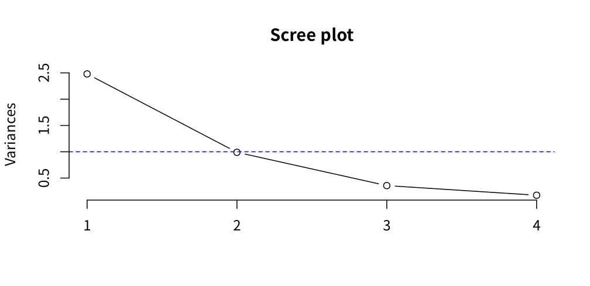
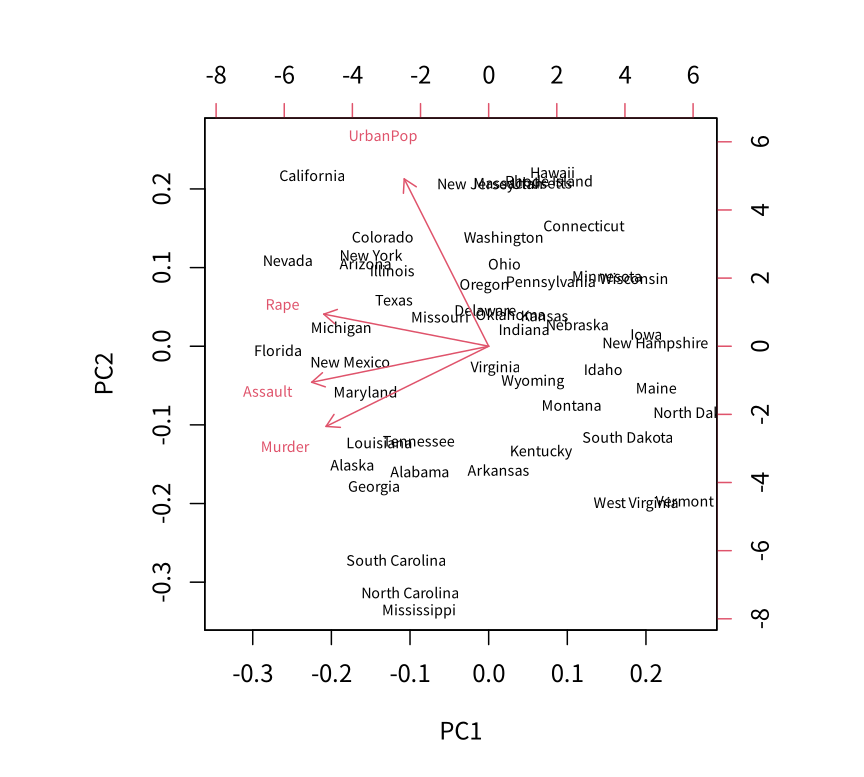
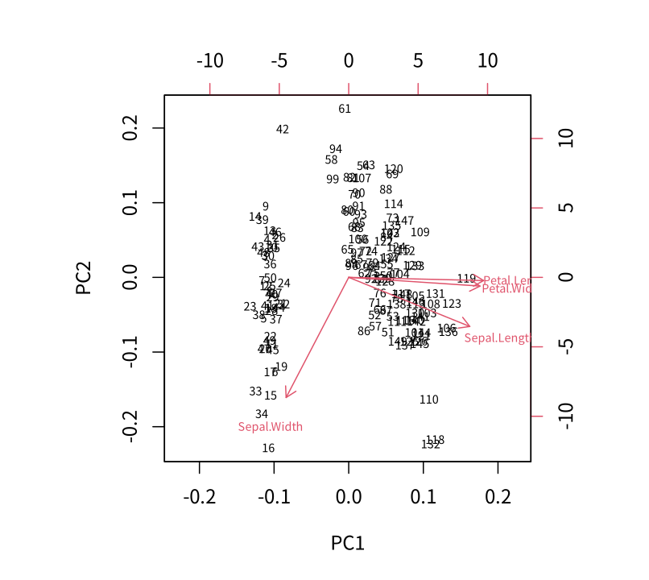
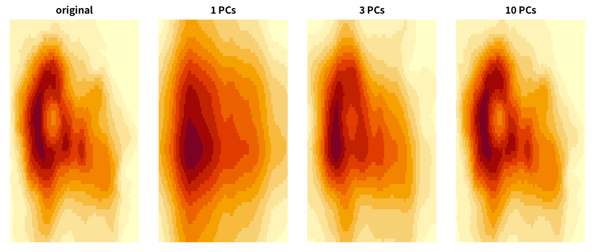

首頁 › 課程筆記 › 第 11 章 當變數很多（高維資料）時，模型容易過度配適 、計算變慢，也很難畫圖看懂。維度縮減 （dimension reduction）就是在盡量保留資訊的前提下，減少變數的個數。這一章學最常用的主成分分析 PCA稀疏主成分分析 SPCA ，以及用 PCA 壓縮影像的例子。
11.1 維度縮減的兩種做法
做法
意思
例子
特徵選取 （feature selection）從原本的變數中挑出一部分
相關係數 、VIF（第 6 章）、逐步迴歸、LASSO、隨機森林 的變數重要性（第 10 章）
特徵萃取 （feature extraction）把原本的變數組合成少數幾個新變數
PCA、LDA
特徵選取留下的還是原本的變數，容易解釋；特徵萃取造出新的變數，能保留更多資訊，但新變數的意義要另外解讀。
以 USArrests（50 州的謀殺、攻擊、強暴犯罪率與都市化程度）為例，四個變數之間有不少相關：
複製 ▶ 執行 R round ( cor ( USArrests ), 2 )
## Murder Assault UrbanPop Rape
## Murder 1.00 0.80 0.07 0.56
## Assault 0.80 1.00 0.26 0.67
## UrbanPop 0.07 0.26 1.00 0.41
## Rape 0.56 0.67 0.41 1.00謀殺、攻擊、強暴三種犯罪率彼此高度相關，某種程度上在描述同一件事（「犯罪多不多」）。PCA 就是把這種重疊的資訊濃縮成少數幾個新變數。
Concept Check：11.1 維度縮減的兩種做法 題目照期末考的題型自編（選擇、填空、簡答、寫程式），不是老師出的題目。選擇與填空用英文題幹，附中文題意。
Which of the following is an example of feature extraction rather than feature selection?
(A) Keeping only variables with a VIF below 4 (B) Choosing variables by stepwise regression with AIC (C) Keeping the top 5 variables by random forest importance (D) Combining all variables into principal components 隱藏解答 中文題意
下列何者是「特徵萃取」而不是「特徵選取」？
答案 (D) Combining all variables into principal components
解析
PCA 把原變數線性組合成新的主成分，是特徵萃取；(A)(B)(C) 都是從原變數中挑出子集，屬於特徵選取。
The term _
隱藏解答 中文題意
哪個名詞指「在盡量保留變異的前提下降低資料維度」的統計方法？
答案 principal component analysis（PCA，主成分分析）
Which statement correctly distinguishes feature selection from feature extraction?
(A) Selection keeps some original variables; extraction builds new combined ones (B) Selection builds new combined variables; extraction keeps some original ones (C) Selection is only for regression; extraction is only for classification (D) Both methods always return exactly the same number of variables 隱藏解答 答案 (A) Selection keeps some original variables; extraction builds new combined ones
解析
特徵選取從原始變數中挑出一部分（例如逐步迴歸、隨機森林的重要性）；特徵萃取把原始變數組合成少數幾個新變數（例如 PCA 的主成分）。萃取後的新變數不再是原本的某一個變數，解讀要靠負荷量。
A data set has 16 financial ratios that are highly correlated with each other. Which is NOT a reason to reduce dimensions first?
(A) To make the main patterns easier to visualize and explain (B) To reduce redundancy caused by strongly correlated variables (C) To guarantee that every original variable becomes significant (D) To give later models fewer inputs and a lower risk of overfitting 隱藏解答 中文題意
16 個高度相關的財務比率，下列何者「不是」先降維的理由？
答案 (C) To guarantee that every original variable becomes significant
解析
降維是為了去除重複的資訊、方便視覺化與解讀、減少後續模型的變數個數；它不會讓原始變數「變得顯著」，那和降維無關。
Before running PCA, you print round(cor(data), 2). What pattern in the correlation matrix suggests that PCA will be useful, and why?
隱藏解答 中文題意
做 PCA 之前先看相關矩陣，看到什麼樣子代表 PCA 會有用？為什麼？
答案 很多變數之間的相關係數絕對值很大（例如 0.7 以上），表示它們其實在衡量類似的東西、資訊重複。PCA 可以把這些相關的變數合成少數幾個主成分，用很少的維度保留大部分變異。若變數之間幾乎不相關，每個主成分只能解釋差不多的變異，降維效果就很差。
解析
另一個常用的判斷是看陡坡圖：前一兩個主成分的特徵值遠大於其他的，就代表少數幾個方向就能概括資料。
11.2 主成分分析 PCA概念
PCA 找出資料變異最大的方向 當作新的座標軸：
第 1 主成分（PC1）是變異最大的方向；
第 2 主成分（PC2）是和 PC1 垂直 （不相關）的方向中變異最大的；
依此類推，p 個變數最多得到 p 個主成分，變異由大到小：\(Var(PC_1)\ge Var(PC_2)\ge\cdots\)。
每個主成分是原變數（標準化 後）的線性組合 ：
\[PC_i=\phi_{1i}V_1+\phi_{2i}V_2+\cdots+\phi_{pi}V_p,\qquad \sum_j \phi_{ji}^2=1\]
係數 \(\phi\) 叫負荷量 （loadings），代表每個原變數在這個主成分中的「份量」。前幾個主成分常常就能解釋大部分變異，只留它們就達到降維的效果。
缺點：每個主成分都是所有變數 的組合，不容易解釋；也不適合非線性或類別資料。
用 prcomp() 做 PCA
複製 ▶ 執行 R pca <- prcomp ( USArrests , center = TRUE , scale = TRUE )
summary ( pca )
## Importance of components:
## PC1 PC2 PC3 PC4
## Standard deviation 1.57 0.995 0.5971 0.4164
## Proportion of Variance 0.62 0.247 0.0891 0.0434
## Cumulative Proportion 0.62 0.868 0.9566 1.0000
center = TRUE：每個變數先減掉平均（平均變成 0）。scale = TRUE：每個變數再除以標準差 （標準差變成 1）。變數單位不同時一定要設 ，否則單位大的變數（這裡的 Assault，數值是其他變數的好幾倍）會主導主成分——和第 9 章分群前要標準化是同一個道理。summary(pca) 是最重要的輸出：
Standard deviation：每個主成分的標準差，平方就是特徵值 （eigenvalue），代表這個主成分的變異。Proportion of Variance：每個主成分解釋的變異比例。PC1 解釋 62%、PC2 解釋 24.7%。Cumulative Proportion：累積比例。前兩個主成分合計解釋 86.8%——四個變數壓成兩個，只損失約 13% 的資訊。
決定保留幾個主成分
三種常用依據：
複製 R screeplot ( pca , type = "line" , main = "Scree plot" )
abline ( h = 1 , col = "blue" , lty = 2 )

## [1] 2.4802 0.9898 0.3566 0.1734複製 R pve <- pca $ sdev ^ 2 / sum ( pca $ sdev ^ 2 ) # 每個主成分解釋的比例
cumsum ( pve ) # 累積比例
## [1] 0.6201 0.8675 0.9566 1.0000
陡坡圖 （scree plot）：畫出各主成分的變異，找曲線的轉折點（和第 9 章肘部法則一樣的想法）。Kaiser 準則 ：只保留特徵值大於 1 的主成分（藍色虛線）。資料標準化後每個原變數的變異是 1，特徵值大於 1 表示這個主成分「比一個原變數還有資訊量」。這裡只有 PC1 的特徵值 > 1。累積解釋變異達 80% ：保留到累積比例超過 0.8 為止。這裡需要 2 個主成分。
cumsum() 是累加：第 k 個值 = 前 k 個值的總和。
負荷量：解讀每個主成分
複製 R round ( pca $ rotation , 3 )
## PC1 PC2 PC3 PC4
## Murder -0.536 -0.418 0.341 0.649
## Assault -0.583 -0.188 0.268 -0.743
## UrbanPop -0.278 0.873 0.378 0.134
## Rape -0.543 0.167 -0.818 0.089pca$rotation 是負荷量矩陣：每一欄是一個主成分，每一列是原變數在這個主成分中的係數。解讀方法：看絕對值大的變數 ，再看正負號。
PC1 ：Murder、Assault、Rape 的負荷量都約 −0.5～−0.6、絕對值大且同號，UrbanPop 較小 → PC1 代表「整體犯罪程度 」（負號只是方向，PC1 越小犯罪越多）。PC2 ：UrbanPop 的負荷量絕對值最大（約 −0.87）→ PC2 代表「都市化程度 」。
負荷量的正負號整體翻轉不影響意義（PC1 全部乘以 −1 也是同一個方向），所以解讀時看的是「哪些變數一起變大、哪些變數方向相反」。
主成分分數與雙標圖
## PC1 PC2 PC3 PC4
## Alabama -0.9757 -1.1220 0.43980 0.15470
## Alaska -1.9305 -1.0624 -2.01950 -0.43418
## Arizona -1.7454 0.7385 -0.05423 -0.82626
## Arkansas 0.1400 -1.1085 -0.11342 -0.18097
## California -2.4986 1.5274 -0.59254 -0.33856
## Colorado -1.4993 0.9776 -1.08400 0.00145pca$x 是每一筆資料在新座標上的位置（主成分分數 ），也就是降維後的資料，可以拿去做分群或建模。
複製 R biplot ( pca , scale = TRUE , cex = 0.6 )

雙標圖 （biplot）把各州（點）和變數（紅色箭頭）畫在 PC1、PC2 平面上：
三種犯罪的箭頭方向相近 → 彼此高度相關；UrbanPop 的箭頭指向另一個方向。
州的位置靠近哪個箭頭的方向，就表示該州在那個變數上偏高。
Concept Check：11.2 主成分分析 PCA 題目照期末考的題型自編（選擇、填空、簡答、寫程式），不是老師出的題目。選擇與填空用英文題幹，附中文題意。
Why should we set scale = TRUE in prcomp() when variables have different units?
(A) It makes PCA return fewer principal components (B) It forces every loading to be positive and sparse (C) It removes outliers before computing the components (D) It stops large-scale variables from dominating PCs 隱藏解答 中文題意
變數單位不同時，prcomp() 為什麼要設 scale = TRUE？
答案 (D) It stops large-scale variables from dominating PCs
解析
PCA 找變異最大的方向，沒有標準化時，數值範圍大的變數變異最大，第一主成分幾乎只反映它。標準化後每個變數的變異都是 1，才能公平比較。讓係數非負、稀疏是 SPCA 的功能。
In summary(prcomp(x, scale = TRUE)), which row tells you how much variance the first two components explain together?
(A) The Standard deviation row under PC2 (B) The Proportion of Variance row under PC2 (C) The Cumulative Proportion row under PC2 (D) The Proportion of Variance row under PC1 隱藏解答 中文題意
summary 中哪一列可以看出前兩個主成分合計解釋多少變異？
答案 (C) The Cumulative Proportion row under PC2
解析
Cumulative Proportion 是累積比例，PC2 那一欄就是 PC1 + PC2 的合計。Proportion of Variance 是單一主成分的比例。
Under the Kaiser criterion, we keep the principal components whose eigenvalues, computed as pca$sdev^2, are greater than _
隱藏解答 中文題意
Kaiser 準則保留特徵值大於多少的主成分？
解析
標準化後每個原變數的變異是 1，特徵值大於 1 表示這個主成分比單一原變數包含更多資訊。
Which component of a prcomp() result contains the loadings that show how each original variable contributes to each principal component?
(A) pca$rotation(B) pca$x(C) pca$sdev(D) pca$loadings隱藏解答 中文題意
prcomp() 結果中哪個元素是負荷量？
答案 (A) pca$rotation
解析
rotation 是負荷量矩陣；x 是主成分分數（降維後的資料）；sdev 是各主成分的標準差；prcomp() 的結果沒有 loadings 這個元素（那是 princomp() 的名稱），取出會得到 NULL。
Perform PCA on iris[, 1:4] with standardization. How much variance do the first two principal components explain together? Show the loadings of PC1 and PC2 and draw a biplot.
隱藏解答 中文題意
對 iris 四個數值變數做標準化 PCA，前兩個主成分共解釋多少變異？列出 PC1、PC2 的負荷量並畫雙標圖。
答案 複製 ▶ 執行 R iris_pca <- prcomp ( iris [, 1 : 4 ], center = TRUE , scale = TRUE )
summary ( iris_pca )
## Importance of components:
## PC1 PC2 PC3 PC4
## Standard deviation 1.71 0.956 0.3831 0.14393
## Proportion of Variance 0.73 0.229 0.0367 0.00518
## Cumulative Proportion 0.73 0.958 0.9948 1.00000複製 R round ( iris_pca $ rotation [, 1 : 2 ], 3 )
## PC1 PC2
## Sepal.Length 0.521 -0.377
## Sepal.Width -0.269 -0.923
## Petal.Length 0.580 -0.024
## Petal.Width 0.565 -0.067複製 R biplot ( iris_pca , scale = TRUE , cex = 0.6 )

解析
老師講義的課後練習。前兩個主成分合計約 95.8%。PC1 中花瓣長、花瓣寬、花萼長的負荷量都大且同號，代表「花的整體大小」；PC2 以花萼寬為主。雙標圖中花瓣長與花瓣寬的箭頭幾乎重疊，表示兩者高度相關。
11.3 稀疏主成分分析 SPCAPCA 的每個主成分都用到所有變數，變數一多就很難說清楚「PC1 到底代表什麼」。稀疏 PCA （Sparse PCA）在求解時加入 LASSO 懲罰，讓不重要的負荷量 直接變成 0 ，每個主成分只由少數幾個變數組成，比較好解釋。代價是解釋的變異會比 PCA 少一點。
課堂用 nsprcomp 套件 的 nscumcomp()：
複製 R library ( nsprcomp )
set.seed ( 2026 )
spca <- nscumcomp ( USArrests , ncomp = 2 , k = 4 , nneg = TRUE , scale. = TRUE )
round ( spca $ rotation , 3 )
## PC1 PC2
## Murder 0.582 0
## Assault 0.608 0
## UrbanPop 0.000 1
## Rape 0.540 0
ncomp：要幾個主成分。k：所有主成分加起來，非 0 負荷量的總個數 。這裡 2 個主成分共只允許 4 個非 0 係數。nneg = TRUE：限制負荷量都是非負數，結果更容易做「越大越好」的正向解釋。scale. = TRUE：標準化（注意這裡的引數 名稱有一個點）。
結果：PC1 只由三種犯罪率組成，PC2 只剩 UrbanPop——和 PCA 的解讀一致，但一眼就看得出來，不用自己判斷哪些負荷量「算大」。
SPCA 的 summary() 中，比例是「占這幾個主成分的總變異」，不是占全部資料。要和 PCA 比較，自己算占全部變異的比例（標準化後總變異 = 變數個數）：
複製 R spca $ sdev ^ 2 / ncol ( USArrests ) # SPCA 每個主成分占全部變異的比例
## [1] 0.5896 0.2500複製 R sum ( spca $ sdev ^ 2 ) / ncol ( USArrests ) # 合計
## [1] 0.8396SPCA 兩個主成分合計解釋約 84%，比 PCA 的 87% 少一些——這就是用變異換取可解釋性。
Concept Check：11.3 稀疏主成分分析 SPCA 題目照期末考的題型自編（選擇、填空、簡答、寫程式），不是老師出的題目。選擇與填空用英文題幹，附中文題意。
What is the main advantage of sparse PCA over ordinary PCA?
(A) It always explains more of the total variance than ordinary PCA does (B) It does not require the variables to be standardized (C) It can be applied directly to categorical variables (D) Many loadings become zero, so components are easier to interpret 隱藏解答 中文題意
SPCA 相較於 PCA 的主要優點是什麼？
答案 (D) Many loadings become zero, so components are easier to interpret
解析
SPCA 以 LASSO 懲罰讓不重要的負荷量變成 0，每個主成分只由少數變數構成。代價是解釋的變異通常比 PCA 少；仍然需要標準化。
In nscumcomp(data, ncomp = 3, k = 12, nneg = TRUE), the argument _ _
隱藏解答 中文題意
nscumcomp() 中，哪個引數讓負荷量都非負？哪個引數設定非 0 負荷量的總數？
解析
ncomp 是主成分個數；scale. = TRUE 是標準化。
Compare the loadings of PCA and SPCA on the same data and explain the advantage of SPCA in interpretability.
隱藏解答 中文題意
比較同一份資料 PCA 與 SPCA 的負荷量，說明 SPCA 在可解釋性上的優勢。
答案 PCA 的每個主成分在所有變數上都有非 0 的負荷量，例如 USArrests 的 PC1 中 UrbanPop 也有 −0.28 的係數，要自己判斷哪些算「重要」，變數一多就很難說明主成分的意義。SPCA 讓不重要的負荷量直接為 0：同一份資料中，SPCA 的 PC1 只有三種犯罪率、PC2 只有 UrbanPop，可以直接命名為「犯罪程度」與「都市化程度」。代價是 SPCA 解釋的總變異比 PCA 少一些。
Compared with ordinary PCA on the same standardized data, what does sparse PCA usually give up?
(A) It needs the variables to be categorical instead of numeric (B) Each component explains a little less of the total variance (C) It cannot be computed for more than two principal components (D) The components are no longer linear combinations of variables 隱藏解答 中文題意
和一般 PCA 比，稀疏 PCA 通常犧牲了什麼？
答案 (B) Each component explains a little less of the total variance
解析
SPCA 強迫很多負荷量變成 0，換來容易解讀（每個主成分只和少數變數有關），代價是解釋的變異略少。它仍是變數的線性組合，也可以算很多個主成分。
For a loadings matrix L, the number of non-zero loadings is sum(L ________ 0), and the proportion that are exactly zero is mean(L ________ 0).
隱藏解答 中文題意
負荷量矩陣 L 中，非 0 的個數、等於 0 的比例要怎麼寫？
解析
比較會得到邏輯矩陣，sum() 數 TRUE 的個數，mean() 是 TRUE 的比例。
11.4 PCA 的應用：影像壓縮與後續分析影像壓縮
一張灰階影像就是一個數字矩陣（每一格是一個像素的亮度）；彩色影像是紅、綠、藍三個矩陣。對矩陣做 PCA，只保留前幾個主成分重建，就能用少很多的數字近似原圖——這就是課堂的影像壓縮實作。
這裡用 R 內建的 volcano（紐西蘭一座火山的地形高度，87 × 61 的矩陣）當作「影像」示範：
複製 ▶ 執行 R img <- volcano
img_pca <- prcomp ( img , center = FALSE )
par ( mfrow = c ( 1 , 4 ), mar = c ( 1 , 1 , 2 , 1 ))
image ( img , main = "original" , axes = FALSE )
for ( i in c ( 1 , 3 , 10 )) {
approx <- img_pca $ x [, 1 : i ] %*% t ( img_pca $ rotation [, 1 : i ]) # 用前 i 個主成分重建
image ( approx , main = paste ( i , "PCs" ), axes = FALSE )
}

複製 ▶ 執行 R par ( mfrow = c ( 1 , 1 ))
image() 把矩陣畫成影像，數值大小對應顏色。img_pca$x[, 1:i] %*% t(img_pca$rotation[, 1:i])：「前 i 個主成分分數 × 前 i 個負荷量的轉置」（第 1 章矩陣乘法），重建出近似的矩陣。只用 1 個主成分就看得出火山的輪廓；10 個主成分已經和原圖幾乎一樣，但需要的數字遠少於原本的 87 × 61 = 5,307 個。
課堂實作讀入照片的寫法（需要 jpeg 套件與照片檔）：
複製 R library ( jpeg )
photo <- readJPEG ( "President.jpg" ) # 高 × 寬 × 3 的陣列
r <- photo [, , 1 ]; g <- photo [, , 2 ]; b <- photo [, , 3 ]
r.pca <- prcomp ( r , center = FALSE ) # 每個顏色各做一次 PCA
# 用前 i 個主成分重建：r.pca$x[, 1:i] %*% t(r.pca$rotation[, 1:i])
PCA 之後接著分群
主成分分數 pca$x 可以當成新的變數，接著做第 9 章的分群：
複製 R set.seed ( 2026 )
km_pca <- kmeans ( pca $ x [, 1 : 2 ], centers = 4 , nstart = 25 )
table ( km_pca $ cluster )
##
## 1 2 3 4
## 11 13 17 9Concept Check：11.4 PCA 的應用：影像壓縮與後續分析 題目照期末考的題型自編（選擇、填空、簡答、寫程式），不是老師出的題目。選擇與填空用英文題幹，附中文題意。
In PCA image compression, what happens when more principal components are kept to reconstruct the image?
(A) The image quality improves, but more numbers must be stored (B) The image quality decreases, but the stored file becomes smaller (C) The colors are converted into a grayscale image instead (D) The reconstruction no longer needs the loading matrix 隱藏解答 中文題意
PCA 影像壓縮中，保留越多主成分會怎樣？
答案 (A) The image quality improves, but more numbers must be stored
解析
主成分越多，重建越接近原圖，但需要儲存的分數與負荷量也越多；越少則壓縮率越高、畫質越差。
Reduce iris[, 1:4] to 2 dimensions with PCA (standardized), run K-means with k = 3 on the two PC scores (set.seed(2026), nstart = 25), and compare the result with the true species.
隱藏解答 中文題意
把 iris 用 PCA 降到 2 維，在兩個主成分分數上做 k = 3 的 K-means，和真實品種比較。
答案 複製 ▶ 執行 R iris_pca <- prcomp ( iris [, 1 : 4 ], scale = TRUE )
set.seed ( 2026 )
km2 <- kmeans ( iris_pca $ x [, 1 : 2 ], centers = 3 , nstart = 25 )
table ( cluster = km2 $ cluster , species = iris $ Species )
## species
## cluster setosa versicolor virginica
## 1 0 39 14
## 2 50 0 0
## 3 0 11 36解析
老師講義的課後練習。前兩個主成分保留了約 96% 的變異，所以分群結果和用原始 4 維標準化資料（第 9 章 9.3）非常接近：setosa 完全分開，versicolor 和 virginica 有部分混在一起。
In the image-compression example, why can an image be stored with far fewer numbers using PCA?
(A) PCA deletes the pixels that are darker than the average pixel (B) A few components capture most of the variation between pixel columns (C) PCA rounds every pixel value to the nearest whole number first (D) PCA keeps only the first few rows of the original image pixel matrix 隱藏解答 中文題意
影像壓縮的例子中，為什麼用 PCA 可以用少很多的數字存一張圖？
答案 (B) A few components capture most of the variation between pixel columns
解析
影像相鄰的像素欄高度相關，前幾個主成分就能保留大部分變異。只要存「前 k 個主成分分數」加「前 k 個負荷量」，就能近似重建原圖，k 越大越清楚但要存的數字越多。
Why might we run K-means on the first few principal component scores instead of on all original variables?
(A) K-means cannot be applied to standardized original variables (B) Principal component scores are always exactly zero on average (C) Fewer, uncorrelated inputs reduce noise and make clusters easier to plot (D) Principal components automatically choose the right number of clusters k 隱藏解答 中文題意
為什麼有時會用前幾個主成分分數來做 K-means，而不是用全部原始變數？
答案 (C) Fewer, uncorrelated inputs reduce noise and make clusters easier to plot
解析
前幾個主成分保留主要結構、去掉部分雜訊，而且互不相關，避免重複的變數在距離中被重複計算；只用兩個主成分時，還能直接畫出分群結果。主成分不會決定群數（仍要用肘部法則或輪廓係數）。
Run PCA on the four numeric columns of iris with standardization, and compute the cumulative proportion of variance explained by the first two components.
隱藏解答 中文題意
對 iris 的四個數值欄做標準化 PCA，計算前兩個主成分的累積解釋比例。
答案 複製 ▶ 執行 R p <- prcomp ( iris [, 1 : 4 ], scale. = TRUE )
ve <- p $ sdev ^ 2 / sum ( p $ sdev ^ 2 )
cumsum ( ve )[ 2 ]
## [1] 0.9581解析
sdev 是各主成分的標準差，平方是特徵值（變異），除以總和就是解釋比例；cumsum() 累加。前兩個主成分約解釋 96%，也可以從 summary(p) 的 Cumulative Proportion 讀到。
11.5 本章小結
維度縮減：特徵選取（挑出原變數）與特徵萃取（組合成新變數，例如 PCA）。
PCA：prcomp(x, center = TRUE, scale = TRUE)；summary() 看各主成分解釋比例與累積比例；$rotation 是負荷量、$x 是主成分分數、biplot() 雙標圖。
保留幾個：陡坡圖、Kaiser 準則（特徵值 sdev^2 > 1）、累積解釋達 80%。
解讀主成分：看負荷量絕對值大的變數與正負號，替主成分命名。
SPCA：nsprcomp::nscumcomp(ncomp, k, nneg = TRUE, scale. = TRUE)，讓不重要的負荷量為 0，好解釋但解釋變異較少。
應用：影像壓縮（用前幾個主成分重建矩陣）、降維後再分群或建模。